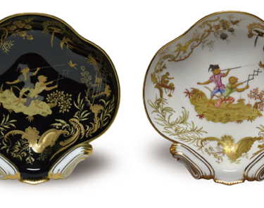
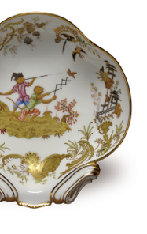

贝壳高脚盘

¥500,000
1760年，法国皇室下令让塞夫尔获得镀金装饰的独家制作权。虽然之后此项法令被其他工厂——如由法国王子资助，而后却被废弃的索镇制造局与尚蒂伊制造局等打破——镀金依然是象征高雅、奢华而又独特的塞夫尔的瓷器语言。镀金装饰使得原本沉谧精幽、萤洁剔透的塞夫尔瓷，散发出如珠宝玉石般的炫目光彩。

自1771年起，镀金就通过化学方法来制作，将24K的金块溶解于酸液（包含金石与硝酸盐的王水）中，之后用氰亚铁酸盐沉淀，并磨成粉状后送回工坊。制瓷者们为瓷器点缀金箔，编织金线，或用金色图案作背景或加盖印，再用840℃-1000℃间的大火炼烧。刚出窑炉时瓷器并无异样，直到在工坊被抛光打磨后才见其光泽。

创作年份:1953年
2.5 x 26 cm
一套磁盘由一件主菜盘，一件汤盘及一件甜品盘组成，共十二套